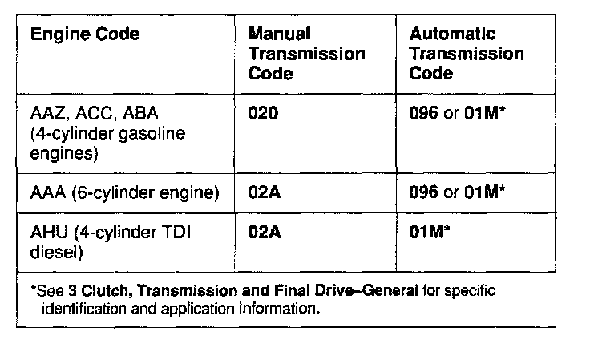
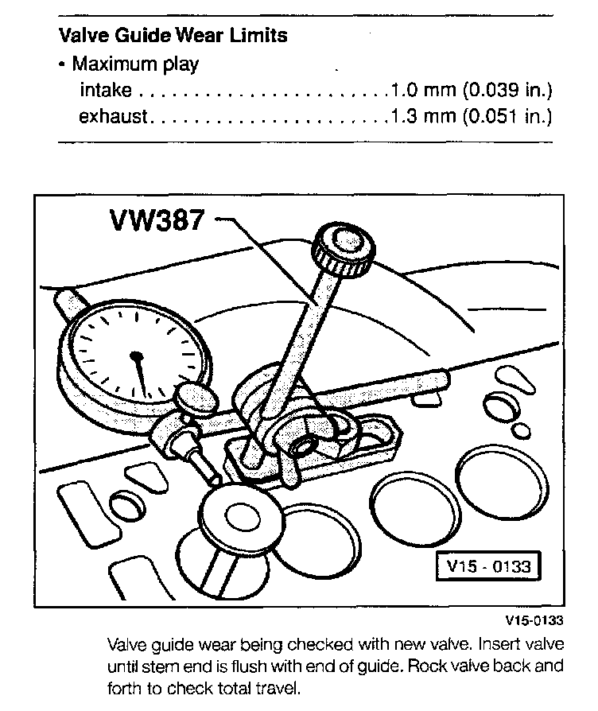
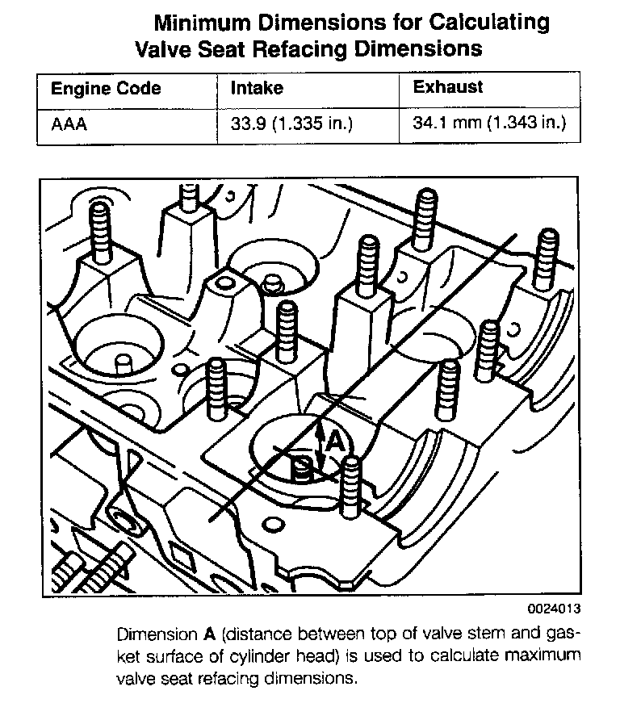

Operation CHARM
: Car repair manuals for everyone.
Home
>>
Volkswagen
>>
1997
>>
GTI (1H1) V6-2.8L (AAA)
>>
Repair and Diagnosis
>>
Specifications
>>
Mechanical Specifications
>>
Engine
>>
System Specifications
>>
Engine Specifications and Clearances
Engine Specifications and Clearances
Engine specifications, 6-Cyl
Engine And Transmission Codes:

Valve Specifications AAA Engine:
Valve Guide Specifications:

Valve Seat Specifications AAA Engine:

Valve Seat Dimensions AAA Engines: